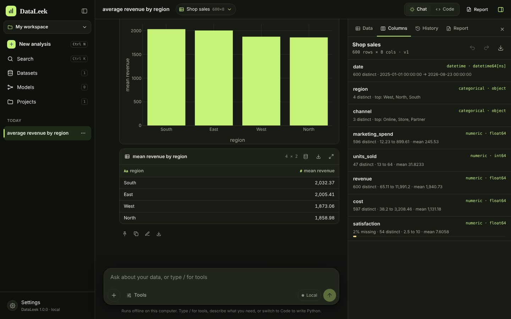

DataLeek is a chat-style workspace for data analysts. Bring data in, ask in plain English or pick from 57 tools, and turn the answers into a report. Everything runs on your computer.

Type what you want to know, or open the tool picker. Each answer arrives as tables, charts and plain-language interpretation you can pin to a report.
average revenue by regionrevenue vs marketing spendcompare tenure by churnedfill missing satisfaction with medianpredict churnedforecast demand 30 days
Drop in CSV, Excel (every sheet), JSON, Parquet, SQLite, PDF and HTML tables. Paste from a spreadsheet, fetch a URL, JSON API or Google Sheet, or generate test data.
Fill or drop gaps, dedupe, filter, convert types, formulas, bins, pivots, joins, outliers and masking. Every change is a version you can undo.
31 interactive chart types, trends over time, scatter matrices and heatmaps, styled to your theme and exportable as PNG or SVG.
Group comparisons that pick the right test, 15 hypothesis tests, correlations, confidence intervals, regression with readable coefficients, and A/B tests.
Train and compare predictive models with honest hold-out scores and feature importance. Segment, detect anomalies and forecast, then score new data.
Pin results, add notes and export to HTML with interactive charts, PDF, Word or Markdown. Export data to CSV, Excel, Parquet or JSON.
No account, no telemetry, and no internet needed to analyse. Want AI help? Run a free local model with Ollama (no account, no key), or connect Claude, ChatGPT, Grok, DeepSeek or Gemini with your own key. The assistant plans multi-step analyses and explains the results. It sees column summaries, not your rows, and every calculation still runs locally.
Eight themes built on the DataLeek palette, plus one that follows your system.
DataLeek checks for new versions once a day and offers to install them. You can also come back here any time.
Windows 10 or 11, 64-bit. Installs for your user account, no administrator rights needed.
macOS 11 or later on Apple silicon (M1 and newer).
64-bit, glibc 2.35 or newer (Ubuntu 22.04+, Fedora 36+, Debian 12+). Opens in your browser.
DataLeek/install.sh to add it to your app menu.In a single local database in your user folder (Windows: %APPDATA%\DataLeek, macOS: ~/Library/Application Support/DataLeek, Linux: ~/.local/share/dataleek). Copy that folder to back up or move your work. Settings → Data & privacy opens it.
No. The internet is only used when you import from a web address, Kaggle, Hugging Face or OpenML, query a database you set up, check for updates, or use a cloud AI provider.
Yes. It installs per user without administrator rights or machine-wide, connects read-only to PostgreSQL, MySQL, SQL Server and ODBC sources, keeps passwords in the system keychain, makes daily backups and keeps a local audit log. IT can manage features and settings with a policy file and host updates internally. Ask for the IT guide.
Once a day DataLeek asks GitHub for the latest release. If there is one, it shows the release notes and downloads the installer for your system, verifying its checksum. On Windows it can install and restart for you; on macOS and Linux it opens the download.
Windows and macOS warn about apps that aren't signed with a paid developer certificate. The steps under each download let you open it anyway; the checksums file lets you verify the download.
Up to 50 MB per file, 100,000 rows and 200 columns per table. Model training samples up to 5,000 rows so it stays responsive.